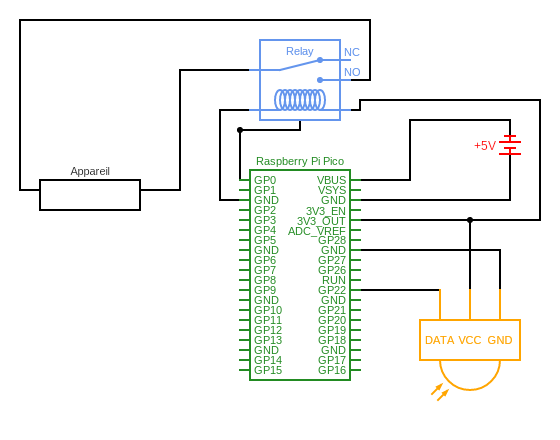

Choix de langage de programmation

Exemple : switch qui détecte le mouvement
Bibliothèques
import board
import time
from digitalio import DigitalInOut, Direction, Pull
Initialisation du matériel

sensor = DigitalInOut(board.GP22)
sensor.direction = Direction.INPUT
relay = DigitalInOut(board.GP0)
relay.direction = Direction.OUTPUT
Définir les fonctions et les variables
activation_time = 5
def relay_activation():
if sensor.value:
relay.value = True
time.sleep(activation_time)
relay.value = False
Boucle principale
while True:
relay_activation()
time.sleep(0.01)
Code final
import board
from digitalio import DigitalInOut, Direction, Pull
import time
sensor = DigitalInOut(board.GP22)
sensor.direction = Direction.INPUT
relay = DigitalInOut(board.GP0)
relay.direction = Direction.OUTPUT
activation_time = 5
def relay_activation():
if sensor.value:
relay.value = True
time.sleep(activation_time)
relay.value = False
while True:
relay_activation()
time.sleep(0.01)